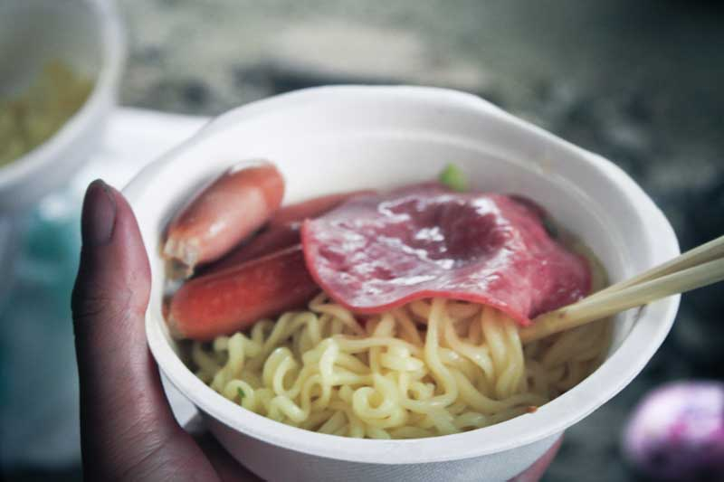

发信人: deityclan (Nate River), 信区: outdoor
标 题: F07毕业旅行大明山游记
发信站: 饮水思源 (2011年06月08日00:02:48 星期三)
其实前天晚上刚刚回到学校的时候我就已经有提笔的打算了，可惜太累；昨天在床上倒了
10个钟头后起床又发现寝室已经欠费停电，只好又跑回床上苦熬了一天。直到今天我才鼓
起勇气，重新坐回电脑前开始重温那痛并快乐着的记忆。
这次出游可谓一波三折。出发前一个礼拜正好是我最纠结的时候。原因主要有两个：第一
、毕设论文；第二、wenjunlu和他的“朋友”。毕设这事呢真心没办法，在交大待了四年
早就已经养成了不到deadline不肯动笔的好习惯，只能一边吃喝玩乐一边在心里不断唾骂
自己；至于wenjunlu这混蛋，他在四月份的时候就开始在QQ、飞信、MSN里各种吵着要参加
毕业旅行，还天天喊着“不去不行，大家都要各奔东西了”“就是要我半夜乘飞机赶回来
我也要参加”之类的豪言壮语，连我这种颓男都听的热血沸腾。不料到了五月底，他突然
说要带上一个“好朋友”一块去，又说这位朋友“很柔弱”，难以胜任太难的线路，当时
我就感觉不妙，觉得这家伙绝对有秒退的危险；到了出发前两天的晚上，我正在电脑前死
命伪造论文数据的时候，突然听见QQ发出“滴滴滴滴”的叫唤，打开一看，只见wenjunlu
来了一句“她可能不去了。”我还没来得及表达对他的同情，他很快又来一句“我也不想
去了。”我当时气的差点砸键盘，但为了大局着想，我还是非常冷静的开导了他整整两个
小时。第二天终于得到了他肯定的答复，我才舒了口气，但总觉得有点不安稳的情绪，生
怕这家伙又突然变卦。
出发那天，上午我和阳姐一起shopping，当时阳姐一直想帮wenjunlu买点东西吃，因为他
是当天飞机赶回来的，可能没时间买，可是被我否决了。中午wenjunlu来到学校，没待两
分钟就走了，说是去徐汇区补拍毕业照，实际上他去了卢湾的医学院，具体干什么大家都
懂的。结果我在寝室一直等到集合前二十分钟他才跑回来，等我们打好包都已经六点四十
分了，加上我的自行车被偷，他的自行车借给我骑的时候也被偷，我们只能一路狂奔到庙
门。结果他连自己的食物都没来得及买。好吧在这里我真的向wenjunlu道个歉，害你冷餐
全吃的压缩饼干真是不好意思。
随着汽车的发动，F07的毕业旅行开始啦。一路上大家欢声笑语，其乐融融，压根没料到第
二天会遭遇怎样的恐怖……车开得挺快，四个多小时就到了目的地，我们很快就找到了各
自的休息场所，铺好防潮垫就开始睡觉了。
screen.width - 200){this.width = screen.width - 200}">
结果这正是噩梦的开端。由于wenjunlu周五早上要赶飞机，导致他昨天只睡了四个小时，
这会儿他头一碰枕头就睡着了，然后我的耳边就传来了悠扬的交响乐。我先是在他耳边低
语，发现他戴了耳塞听不到我说话；然后我狠戳他的腹部，终于让他安静了三分钟，在他
安静的时候从门外又传来了另一批驴友的吵闹声。他们和wenjunlu的呼吸声形成了完美的
默契，轮番上阵摧残我的神经细胞。我缩在睡袋了熬了大概一个小时，终于等外面的声音
安静下来，还没缓口气就又听见另一个同学的呼噜声钻入我的耳膜。这位同学在打呼噜方
面的造诣可谓登峰造极，wenjunlu跟他一比不知道差到哪里去了，我听的心惊胆战，只盼
望他们自己的呼噜声能把他们自己吵醒，好让我找个机会赶紧入睡。可惜他们俩琴瑟和谐
，完全进入了忘我的境界。我又苦等了差不多一个半小时，大概是三点多的时候，他们终
于曲终人散，可是我发现这个时侯我已经没法睡着了！！！伤不起啊！！！！我就一直眯
着惺忪的睡眼望着门外淅沥的小雨，直到天空泛起一丝白光的时候才勉强休息了一小会儿
。
早上五点四十分大家准时起床，我也装出一副睡的很爽的样子从睡袋了爬起来，看见一只
瑟瑟发抖的小狗缩在YZH的防潮垫上，心里不由泛起同病相怜之感。
screen.width - 200){this.width = screen.width - 200}">
这个时侯天色已经比较明亮，但滴滴答答的雨声还是加重了我心头的不详之感，这条线路
按照财哥的说法是有一定难度及强度，那么究竟是为了防止大家fb而做的象征性的恐吓还
是现实而残忍的直白呢？早饭吃的是什么我不太记得了，只记得我吃了不少，好像吃到差
点睡着。
screen.width - 200){this.width = screen.width - 200}">
队伍一出发，我幸运地发现自己居然走在最前面的队伍里。爬山的时候走前面往往比走后
面的要轻松些，毕竟后面的队伍只能跟着前面的节奏行进，而前面的人只要管好自己的步
子就好。我们一组的成员有阳姐、我、wenjunlu以及雨神。话说我一直都不觉得下雨是雨
神的错，这完全是季节的错吧，你挑个春夏之际出去玩怎么都得下雨吧，怎么能全归功于
雨神呢。我象征性的顶着一个廉价的一次性雨披，走了大概一个多小时，我终于发现这东
西完全就是摆设，除了装饰就没别的用处了，我穿着的衣服很快就已经湿了一半。阳姐心
情很好的各种偷拍，wenjunlu只能抱着自己的单反望着雨天默默流泪，大骂着“天气预报
太不准了”，我暗暗偷笑，因为我之前为了诱骗他出来告诉他天气是阴转阵雨。
screen.width - 200){this.width = screen.width - 200}">
第一天的路程原计划是走八个小时以上，绵绵的细雨明显加大了行走的难度，不少泥坡变
的很滑，让人走起来提心吊胆，速度也放慢了。就这样走了一会儿，遇到了一块巨大的石
坡，协会里的精英分子齐聚石头地下，开始掏家伙了。我看着他们把绳子、主锁、安全带
什么的拿出来，心里不由一惊，这难道要玩上升？上次我可是偷懒没去训练的！我看见YH
像个猴子似的，也没用什么绳子，两三下就窜到石头顶上去了，然后开始往下面布绳，心
里暗暗叫苦。再一看有好几个人都已经在穿安全带了，看样子是要动真格的了。
screen.width - 200){this.width = screen.width - 200}">
我站在石头下面观摩了好久，发现他们上去的挺快，也不像是很难的样子，于是我毫不犹
豫地冲了上去。过程很曲折，也很悲伤，总之就是我费劲了全身的力气才被一个大一的小
学弟拉着攀了上去，结果一上去发现一群女生坐在那儿休息，才发现原来安排是让女生先
攀上来，我只能默默地缩在角落里，生怕被别人注意到。
这时候的雨下的愈发暴戾起来，豆大的雨滴狠狠地砸在我的脸上，我感觉自己冻的浑身直
哆嗦，身上的热量正在拼命往外挥散。要说以前我出来玩，挫是比较挫的，但还是能保证
好自己的状态；现在这样的情况，我可谓是自身难保，只恨不是女儿身不能把自己的大包
托付给别人。在原地哆嗦了一会儿，我发现YH又像猴子一样抱着绳子窜上了另一个坡，我
看的泪流满面，难道又一个相同的坡在等着摧残我的自尊？好不容易前进了一会儿，我终
于发现了另一个大杀器——近乎垂直的岩壁。wenjunlu也没练过上升，但他有的是蛮力，
居然靠着一身的蛮劲顽强的攀了上去。我艰难的尝试了好几次，都感觉没有成功的可能。
这时候雨神看不下去了，他亲自跑到我前面做了个示范动作，我就看见他轻松地就着绳子
攀了上去，心中对他鬼神莫测的力量感到深深的敬畏。
screen.width - 200){this.width = screen.width - 200}">
直到我在下面听到ZZM，YH等人的悉心指教我才知道上升并不是完全依赖力量的活动，更重
要的在于利用技巧。我像背口诀一样背着这些技巧，终于一点点地艰难爬了上去。上去之
后我的脚一直在发软，心里充满了愧疚——由于我的懈怠，耽误了大家的时间，实在是很
不应该。上去以后我们一群人继续在大雨里享受着天然的冷水浴，一个个淋得嘴唇发白，
面目狰狞。
screen.width - 200){this.width = screen.width - 200}">
过了一会儿HYP上来了，wenjunlu问他还剩下多少路程，HYP脸色凝重的说现在才走了1/4的
路，当时我听的差点晕过去。因为这个时侯我们已经在雨水里浸泡了差不多五个小时，所
有人都爬上第二块岩壁的时候已经是中午十二点多了。为了节约时间我们连午饭的步骤都
省了，只是趁着等其他人的时间大家匆匆吃了点随身的食物。我吃了两块压缩饼干，眼皮
重的像灌了铅一样，只能眯着眼睛看东西。
没有休整多久我们再一次出发了，其实这个时侯我宁愿多走几步路也不想继续坐在雨水里
泡着，因为实在是太冷了。这个时侯我全身上下都已经湿透了，鞋子里灌满了泥水，感觉
非常难受。好在过了两块大石壁之后，此后的路途都没有特别需要技术的地方，基本上靠
着自己的膝盖和手臂都能勉强支撑过去。一路上的植物普遍长刺，我的双臂和手掌都被刮
得一片狼藉，布满了密密麻麻的伤痕。
screen.width - 200){this.width = screen.width - 200}">
我一路上都在想这些长刺的植物是不是大明山山神的恶趣味，因为有一段超级滑的下坡上
两边的树居然全长满了刺，我当时脚底一滑，手下意识的抓上一颗树，疼的我惨叫一声，
松开手去抓另一颗，又是一声绝望的惊呼。从这之后碰到什么树我都不太敢伸手去抓，宁
愿用屁股着地的丑陋办法从坡上滑下去。
就这么跌跌撞撞的走了一段路，我发现开始进入上坡的路程了。这段路程可以说是我这次
旅程最痛苦的一段路，甚至可以说是我走过的所有线路里最让人难受的一段路途。在大约
两个小时的时间里，我们一直在持续着上坡的路线，我感到我的腿部不断发出即将抽筋的
信号，先是左腿开始抽搐，然后是右腿，渐渐的两只腿都发出了痛苦的悲鸣，我的视线开
始模糊，呼吸开始急促，大脑开始迟钝，只觉得眼前什么都看不见，什么都听不见，什么
都不知道，只有一种莫名的力量在支撑着我的平衡，让我不至于一头摔倒在地上。我不断
地告诉自己，马上就要到了，马上就可以休息了，不能停下来，不能放弃，这是我们F07的
毕业旅行——最终我没有倒在路上，而是坚持到了最后，我觉得这正是户外运动的乐趣吧
，无论自己技术多么差劲，体力多么不济，至少还可以靠着一点点韧性，足以支撑我完成
这一次的旅程。
上坡的路程总算告一段落，我们在原地休整了一下。据我不完全回忆，在这短短十分钟的
休息时间里，我强行掠夺了包括阳姐、财哥、ZMX等人在内的各种食物、饮料。不过我也是
没办法，因为我发现在极度困顿的情况下，吃东西可以稍稍提神，让我不至于直接睡倒在
地上起不来。吃饱喝足之后我感到自己有了一种重回人间的感觉，好像获得了新生一样。
接下来的路程就不用多做叙述了，基本上没有什么特别的难点，上坡的路程也少了很多。
说起来这段路我和wenjunlu一直和一对大一的同学走在一起，他们的表现让我惭愧不已，
那个女生甚至还背了一大串绳子，让我一度认为我碰上了下一个LYW级别的人间凶器。
screen.width - 200){this.width = screen.width - 200}">
后来我才知道原来这些路他们都走过，对每一个阶段的难度都胸有成竹，心里有底自然脚
上不虚，大步迈的风生水起。wenjunlu的表现和我基本一样，属于走三步就要装模作样停
下来休息一步的类型，只不过他居然还时不时飙出几句歌声，让我实在搞不懂他到底累了
没有。
终于，在最后的最后，我们一行人大部队来到了本次的扎营地——千亩田，虽然说这地儿
号称有一千亩田，但我基本只看到了杂草，连牛粪都没见到，只觉得有些名不副实。扎营
的地方事实上就是一个民宿，外面搭了个小棚子，可以搭几个帐篷，再多的就要搭到露天
里面去了。在这里感谢负责和民宿主人交涉的同学们，我实在不知道是谁，可能是JYQ等几
个人吧，让我们在这个潮湿的夜里烤上了温暖的炭火（还是要交钱的），让几个帐篷能够
在小屋里搭起，没有遭受风雨的荼毒（虽然我睡到小木屋里去了）。无论如何，在疲惫的
旅途过后，暂时的休憩实在让人感到幸福不已，就好像在沙漠里行走的人才能体会清水的
甘甜，我们这群关在城市牢笼里的鸟儿只有在这种时候才能享受到这种纯粹的快乐。
screen.width - 200){this.width = screen.width - 200}">
晚饭吃的非常过瘾。首先是煮果珍姜汤，阳姐把炉头点好，把水放好，把锅盖好，然后交
代我负责果珍就回去整理东西了。我死死的盯着锅，好不容易等到水沸腾了，我直接撕开
果珍的包装就往里面倒，wenjunlu在旁边焦急地说“到了到了”，我随口答道，“是在倒
着呢”，结果整包果珍都倒进去了，这直接导致我们第二天没有果珍喝。喝完热腾腾的果
珍，我感到暖和了许多，靠近篝火边站了一会儿，只觉得衣服上的水汽不断的被蒸发出来
，身子轻飘飘的好像要飞起来一样。看看其他人，烤睡袋的，烤防潮垫的，烤鞋子袜子的
，甚至还有烤内裤的，真是琳琅满目，不过烤内裤的那个同学声称那内裤不是她的，也不
是她的他的，到底是谁的到现在我也没有个头绪。我们组的晚饭是乌冬面，白白的面条在
沸水里扭动着，看的人食欲大增。雨神则霸气外露，直接做了一锅香气十足的拌饭，馋的
我们口水直流。吃完一锅面条以后，肚子已经有点饱了，阳姐居然又掏出了两包培根！！
OMG阳姐我太佩服你的FB程度了……和雨神借了煎锅我们又开始煎培根吃，阳姐一直勤勉地
端着煎锅，一点点地把培根放进去，然后一点点被wenjunlu吃下肚子。每吃一片他还要感
慨一句“这是我第一次出来能吃上培根啊！！！”要不是我及时阻止，wenjunlu都快把我
们的份给吃光了。吃完培根以后我们又用芝麻油炒青菜吃，仔细一想我们吃的还真不是一
般的多啊，好像别的组都已经把锅子刷好了我们三个人还像小狗一样围在一起烧东西吃。
其实我们吃的不是食物，只是寂寞罢了。
screen.width - 200){this.width = screen.width - 200}">
screen.width - 200){this.width = screen.width - 200}">
吃罢饭后我们享受了一下篝火以后就准备睡觉了。在这里不得不提一下这次旅程的一群伟
大的群众演员——蚂蟥。一路走来，我们趟过了无数溪流，这些敬业的同志一直默默地躲
在阴暗潮湿的角落里，等到我们的出现，然后奋不顾身地扑向我们身边，背井离乡、颠簸
流离，毫无怨言地陪伴着我们走完剩余的路程，这是什么样的一种精神！纵观全场，大部
分人都被蚂蟥感动地流下了热血，有几个女生甚至血流满脚，连我这种皮厚的家伙也被蚂
蟥咬了一口。被蚂蟥咬过之后的伤口是不会愈合的，这意味着你的血会一直流，一直流。
wenjunlu倒是完全没受影响，还得意洋洋的自称“蚂蟥是我的兄弟哦”，结果第二天就被
咬了三次。对付蚂蟥我是毫无心得，加上实在太累，我就不管伤口钻回小木屋睡去了。
screen.width - 200){this.width = screen.width - 200}">
同睡的还有wenjunlu、阳姐和ZYT学姐，ZYT学姐应该是属于比较受蚂蟥欢迎的类型，所以
她的腿上血流如注，甚至连手指上都出现了蚂蟥的倩影。躺下来的时候我只觉得浑身酸痛
，四肢乏力，心里不由得对第二天的行程充满了恐惧，又害怕今晚的睡眠遭遇滑铁卢，想
不到在这一刻突然得到了睡神的青睐，疲累沉重的压倒了我最后一丝忧虑。整夜无梦，彻
底滤清了一切杂念，完完全全的睡眠，只有经历过这般疲累的人才能体会。
screen.width - 200){this.width = screen.width - 200}">
第二天起来的时候天已经大亮，雨也停了，与昨日的记忆形成了强烈的反差，让人以为自
己像是做了一场梦，只有酸痛的手臂和双肩在提醒着我今天还有一场考验。起床以后，发
现自己的四肢已经有些不灵活了，似乎在昨天已经预支了今天的部分体力。我们组的成员
们又开始围在一起煮东西吃，昨晚FB完了，今天又该回归简朴的泡面了，不过我觉得还是
好吃，起码比宅在寝室里泡面要好吃得多。
 screen.width - 200){this.width = screen.width - 200}">
吃完后听财哥说了说今天的行程，大约要走5~8个小时。经过昨天的经历，我现在对财哥说
的一切关于难度的描述都深信不疑，财哥说可能要走八个小时那肯定还不止八个小时。我
的脚又不由自主地开始打颤，只好求wenjunlu帮我背一点东西，他一开始还不肯，“我背
的很多了。”我只好一针见血地指出他背上来的食物已经吃完了的事实，他才帮我背了一
些食物和我的一件衣服。不过我知道其实他也没有多少力气了，我只是希望我们俩都能坚
持走完，不然说起F07的毕业旅行居然有F07的同学没走完那就丢脸了。
screen.width - 200){this.width = screen.width - 200}">
出发前我惊异地发现LYW居然没背东西，一开始我还不太能接受这个事实，在我印象里LYW
的体力绝对比一般的男性要好很多很多。难道我不是最挫的？？？不过我也不敢去问——
wenjunlu后来很不识趣地问东问西我才知道了真正的原因。不过我想，在自己很不舒服的
时候也能坚持出来，说明她也是很重视这一次的毕业旅行的吧。

说起来，虽然我毕业之后继续留在学校读研，但是很多其他的朋友会选择离开。正如阳姐
说的那样，去哪里玩不重要，重要的是和什么人一起玩。从进入协会开始我就认识的朋友
们，很多已经离开了学校，很难见到一面；也有很多即将离开，以后也难以相聚。离别的
惆怅莫过于此，它给你留下了的回忆，让你的心里充满了难以填补的空虚。
不过对于当时的我而言，这些都是题外话，因为我还要面对八个小时的路程呢……想想自
己目前的状态，不禁对自己今天能否成功下山抱有疑问。不过第二天的天气还是挺不错的
，基本上没有下什么雨，加上一路上基本都是下坡，基本都是靠着膝盖的力量在支撑，我
觉得以我的下山姿势来看这次我的膝盖又磨损了不少……走了一会儿，又来到了一处悬崖
边上，这回儿玩的是速降——不得不说财哥、雨神他们还是很有心的，这次毕业旅行基本
上把以前没玩过的东西都玩了个遍，想忘记都难了！
screen.width - 200){this.width = screen.width - 200}">
速降的难度比起上升要小很多，毕竟是靠着自己的重量下去，怎么也不会像wenjunlu那样
上升上得脱力吧。不过第二天我和wenjunlu就没有第一天的良好待遇了，直接沦落到队伍
的末尾陪着熊和ZZM这对基友押队，还目睹了他们将一对可爱的对讲机玩残的过程。这个事
情嘛确实做的不太对，不过后来他们也反省过了，毕竟在某些特殊情况下这样的玩笑可不
是随便乱开的。
screen.width - 200){this.width = screen.width - 200}">
之后还出了一点点小岔子，由于我之前速降的是JYQ，他之前是wenjunlu，而我降下去以后
JYQ还要留在岩壁那儿收器材，所以wenjunlu等了我好一会儿，走在他前面的LYW已经走远
了。这里我只能说LYW你绝对低估了wenjunlu的路痴能力，他之前在上山被前面的人落下的
时候就经常指着一个莫须有的暗道说我们是不是应该走这儿啊？？结果这次还真出现了两
条路，一条往左一条往右，经后来的ZZM等人的鉴定往右的道路应该是不对的，因为直接通
往乱石滩了；但谁也不能肯定该怎么走，加上我们对前面的呼喊由于水流的声音被掩盖了
，也没有得到回音，结果是HYP从后面心急火燎地赶上来追上前去，把遇到的人都骂了一遍
。结果由于有一位同学在第一天的上升的时候曾经受到过雨神的表扬，她就成为了野协史
上第一位被雨神表扬被HYP批评的幸运儿。到现在我还觉得这事儿有些不可思议……
接下来的路程就没再出过什么乱子了，倒是wenjunlu为了掩盖自己的疲累一直在猛地唱歌
，我一怒之下也唱了起来。走了一会儿财哥说还有一个半小时就能到了，我怀疑自己的耳
朵出了毛病，说好的八小时呢？后来才知道第二天其实已经选择了一条比较简单的下山路
线，财哥还是非常照顾我们这些打酱油的。
screen.width - 200){this.width = screen.width - 200}">
回到向导家里大家尽情地吃了一顿。多情的蚂蟥仍然一路陪伴着某些同学，其中一位叫WH
的女生居然同时和十几位蚂蟥亲密接触，两条腿上鲜血淋漓，看的wenjunlu食欲大增。饭
桌上觥筹交错，你来我往，好不热闹，一只瘦弱的鸡窝在盆子里，我们就着鸡的身子喝它
的洗澡水，倒也有点鸡的味道。一盘梅干菜烧肉刚端上来没多久，就只剩下了梅干菜，连
肥肉都被吃的一点不剩。大家肚子里的油水都被挖空了，看到任何带荤的食物都绝不放过
。
screen.width - 200){this.width = screen.width - 200}">
screen.width - 200){this.width = screen.width - 200}">
汤足饭饱之后，就是大家对财哥的施虐时间，具体操作不做过多叙述，总之我是不忍心看
躲进厕所里去了。只是当我看到雨神等人将财哥抛起来的时候，心里总觉得有点酸酸的，
我觉得财哥真是太低调了，他真的为协会做了很多很多。我真心祝愿财哥能在以后的旅途
中越走越顺。
screen.width - 200){this.width = screen.width - 200}">
回程的车上成了大家的自曝时间：每个人都对这次毕业旅行做了深刻的检讨和深情的评价
。有个大一的同学说的我记得很清楚，他说野协每一届成员都有着一届的风格，当LYW问道
具体的时候他反而答不上来了。说者无意听者有心，我开始仔细地思考这个问题，属于F0
7的风格到底是什么？一开始我们都是一样的，到后来却走上了不同的道路：先是乔文的淡
出，ZMX出国求学，我们三人组一直坚持打酱油的路线不动摇，财哥一个人默默支持着协会
F07的大旗，LYW也是辗转了不少地方，阳姐则是一直参加活动，XY虽然不是干事但是也参
加了很多活动分享了很多回忆，还有MJT、HCX等，每个人都似乎渐行渐远，又似乎从未离
开，每一次的再遇都能露出会心的微笑。我在这个协会里经历过一些事情，也忽略过很多
事情，很多事情都不重要，重要的只是我们的回忆。那些记忆里的亮色是永远不会褪去的
。
轮到我总结的时候，我还是插科打诨混过去了，我觉得这还不是离别，不需要什么煽情的
话语。然而wenjunlu却控制不住情绪，哭了。我看他哭的像一个小孩子一样，没有人知道
他心底的真正想法。我只是知道他应该和我一样舍不得吧，故人已去，纵使逗留，亦感悲
凉。但我觉得一句歌词可能更适合用来描述分别：“当你听说，我要离开的时候，亲爱的
朋友，你不一定非哭不可。”对于我而言，能够相遇，已经足够。
回到交大已经是晚上七点了，我和wenjunlu看着别人快乐地骑车回寝室，不由得想起一个
悲伤的事实：我们是没车的！只好走回去。一路上wenjunlu一直在絮絮叨叨地和我说以前
在协会经历过的事情，他说他会常常想起自己在大一的时候经过东区大转盘的情景，仅仅
只是须臾的邂逅，就改变了他大学的生活轨迹。我想我也是，我自认为大学里做的成功的
事情不多，加入野协一定是其中之一，因为它让我体会到了另一种生活的态度。
以往的出游我就从来没有写过游记，这倒不是因为我很懒，只是回来一般都很累，等到休
息几天以后记忆也开始模糊了，慢慢就丧失了提笔的兴趣。这一次好歹也是我毕业前最后
一次疯狂，无论如何也有记录下来的必要，想想自己十年后或者二十年后，重新看到今天
的文字，心里不知道会有什么样的触动？
F07毕业旅行check list：
来自F09的威武型男YZH
screen.width - 200){this.width = screen.width - 200}">
背绳子的小美眉 LWJ对她赞不绝口啊
screen.width - 200){this.width = screen.width - 200}">
向导老王酷照一张 无奈吧？

雨神v5
screen.width - 200){this.width = screen.width - 200}">
基友二人组
screen.width - 200){this.width = screen.width - 200}">
贤惠的阳姐
screen.width - 200){this.width = screen.width - 200}">
YH&WBY
screen.width - 200){this.width = screen.width - 200}">
三代人的传承（好吧后面我承认后面那俩很抢镜）
screen.width - 200){this.width = screen.width - 200}">
HYP你太帅啦~~~
screen.width - 200){this.width = screen.width - 200}">
ZMX这张有点霸气啊
screen.width - 200){this.width = screen.width - 200}">
我们美丽的九姐~（绝对没有PS！！）
screen.width - 200){this.width = screen.width - 200}">
其实小轩轩也惨遭酷刑
screen.width - 200){this.width = screen.width - 200}">
只要看的不是那么清楚 熊还是挺潇洒的

发现野人出没！！
screen.width - 200){this.width = screen.width - 200}">
在大棚外面承受风雨的帐篷们
screen.width - 200){this.width = screen.width - 200}">
F07级野人集体合影
screen.width - 200){this.width = screen.width - 200}">
--
※ 来源:·饮水思源 bbs.sjtu.edu.cn·[FROM: 59.78.15.214]
※ 修改:·deityclan 于 2011年06月08日00:03:37 修改本文·[FROM: 59.78.15.214]
※ 修改:·deityclan 于 2011年06月08日00:06:47 修改本文·[FROM: 59.78.15.214]
※ 修改:·deityclan 于 2011年06月11日23:28:40 修改本文·[FROM: 59.78.15.216]
※ 修改:·deityclan 于 2011年06月11日23:31:28 修改本文·[FROM: 59.78.15.216]
※ 修改:·deityclan 于 2011年06月11日23:33:55 修改本文·[FROM: 59.78.15.216]
※ 修改:·deityclan 于 2011年06月11日23:34:44 修改本文·[FROM: 59.78.15.216]
※ 修改:·deityclan 于 2011年06月11日23:35:38 修改本文·[FROM: 59.78.15.216]
※ 修改:·deityclan 于 2011年06月11日23:36:10 修改本文·[FROM: 59.78.15.216]
※ 修改:·deityclan 于 2011年06月11日23:36:48 修改本文·[FROM: 59.78.15.216]
|